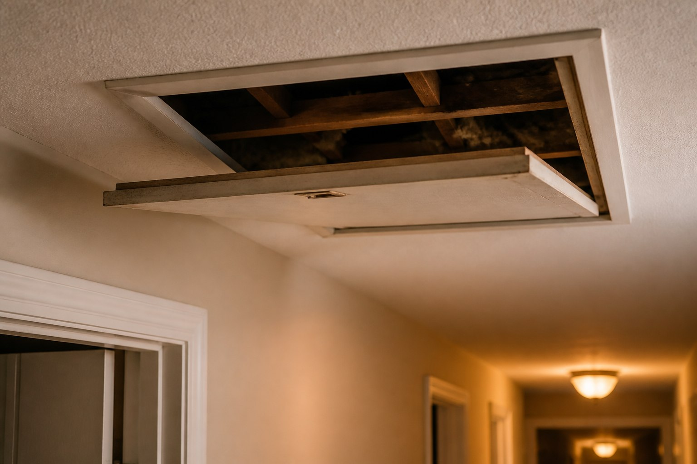
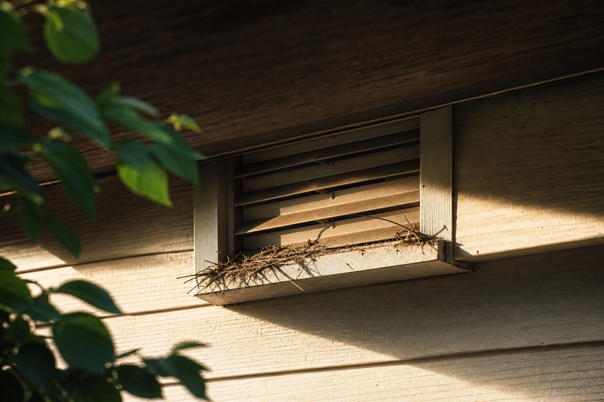

Independent platformProvider options may varyNo direct service agreement through this website
About Lacerta
Helping homeowners understand wildlife
Lacerta is an independent wildlife provider-matching platform created to help homeowners submit their concern,
review local options, and choose a provider that fits their situation.
Whether the issue involves attic noises, bats, raccoons, squirrels, birds, or general wildlife activity, our
platform keeps the process simple, transparent, and focused on informed comparison.
Lacerta is built for homeowners who need to organize a wildlife concern without mistaking a matching platform for a direct contractor. Submit the concern, review available provider options, and choose whether to continue with a provider.
Request details help identify relevant local provider categories.
Provider availability and service terms come from participating providers.
Homeowners should verify licensing, insurance, methods, and local regulations before choosing.
From attic sounds to exterior entry gaps, the concern shapes the provider conversation.

Attic noises or indoor access questions
Exterior gaps and roofline details

Nesting or roosting areasYard sightings
Questions
What homeowners usually ask first.
No. Lacerta is an independent wildlife removal matching platform and does not perform removal, trapping, inspection, cleanup, or repair work directly.
Lacerta may use your request details to help connect you with participating local provider options. Availability depends on your location and the concern type.
Where multiple options are available, homeowners can review provider details and ask questions before choosing whether to continue.
Pricing is provided by participating providers and can depend on location, concern type, access, timing, cleanup scope, and service terms.
Yes. Homeowners should verify licensing, insurance, methods, local regulations, and warranty terms with the provider they choose.